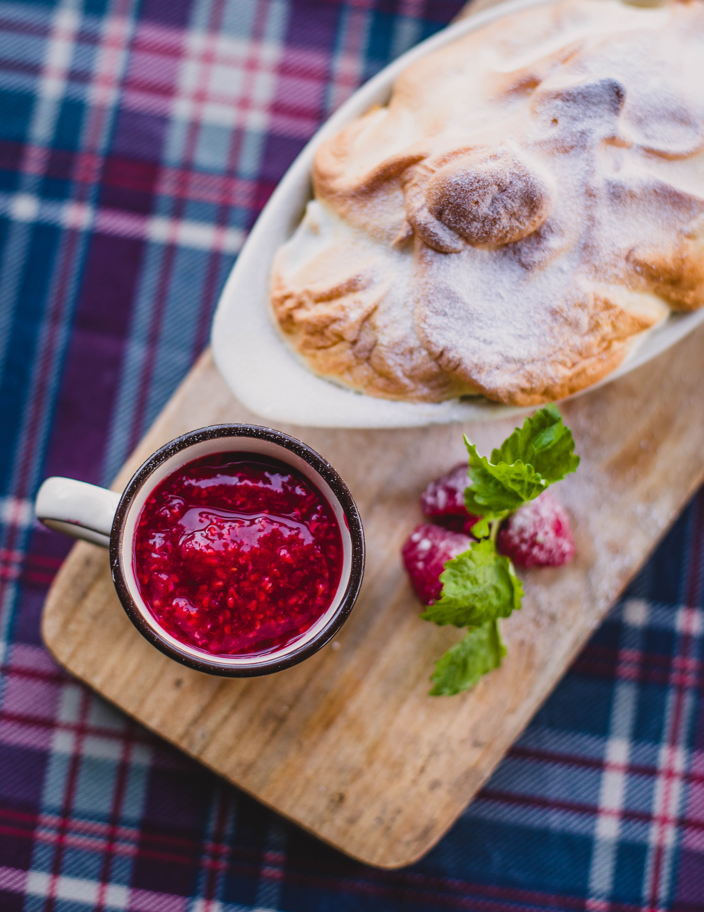

about jam.

Originally I made jam with my grandmother when I was a kid, but now I use it as a way to live sustainably. After years of making jam and giving it to family and friends, I got pushed into making a blog about my jam. Five years later, I am still enjoying spreading my jam everywhere!